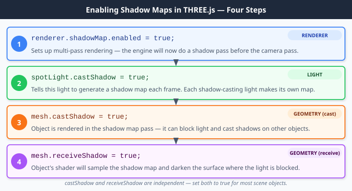

Page 15: Shadow Maps in Three.js
Implementing shadow maps can be tricky. Fortunately, they are built into THREE.
THREE makes it pretty easy to use shadow maps. All you need to do is:
- Make sure that your renderer has
shadowMap.enabledset to true. - Make sure that you set the appropriate properties for objects. Some objects should cast shadows, and some objects should receive shadows. You need to use the
castShadowandreceiveShadowproperties of objects. - Make sure your lights are set to
castShadow. It’s easiest to use shadows with spotlights (for reasons we’ll discuss in class).
That’s pretty much it. There are plenty of parameters and options you can tune to make things look the way you want.
Shadow Maps in THREE.js
THREE.js handles all the multi-pass rendering machinery for you. You only need to flip four switches.
1. Enable shadows in the renderer
|
|
This tells THREE to set up the multi-pass rendering pipeline. Without this, no shadow maps are created at all.
2. Tell lights to cast shadows
|
|
Each shadow-casting light will generate its own shadow map. For a SpotLight, THREE automatically picks a reasonable frustum and map resolution. You can tune these:
|
|
3. Tell objects to cast shadows (appear in the shadow map)
|
|
An object with castShadow = true is rendered during Pass 1, so it shows up in the shadow map and can block light from reaching other surfaces.
4. Tell objects to receive shadows (be darkened when in shadow)
|
|
An object with receiveShadow = true samples the shadow map when it is shaded, so its surface can be darkened where the light is blocked.
Note that castShadow and receiveShadow are independent. An object can cast shadows without receiving them, or receive shadows without casting them. Typically, you want both set to true for most objects.
{kind=link}

The four properties that enable shadow maps in THREE.js, and what each one does in the rendering pipeline.
Shadow Map Exercise
For this exercise, all you need to do is make shadows in the scene below. Note: you’ll have to make your own spotlight. You are welcome to remove my objects and put in your own. The file is 06-15-01.js . Of course, you can use this as an opportunity to experiment with more lights and shadows.
It needs to be obvious that one object casts a shadow on another (besides the ground plane). So, in the sample scene, make sure to place the light far enough above the ground that the flying ring casts a shadow on the cube and the knot.
view - look at the box and experiment with it
examine - look at the code for the box
edit - change the box's content
rubric - several steps are suggested in the rubric page - form elements on page in rubric
06-15-01.html 06-15-01.js
| Kind
Kind of rubric items: standard - expected from all students advanced - used to get a better grade creative - an opportunity to do something creative optional - not required, but encouraged |
Description | |
| standard | there are shadows | |
| standard | there are shadows of one object onto another object |
Summary
Shadow maps are the classic texture hack: we work around the limits of the rasterization pipeline by using its flexible abstractions in a clever way. Shadow maps use multi-pass rendering and render-to-texture, along with modifying the lighting process to access the texture map.
Next: Page 16 - Exercise: Texture Demo